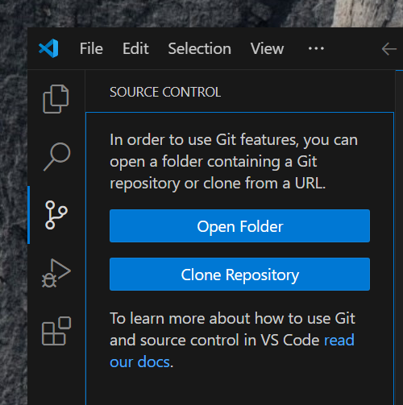
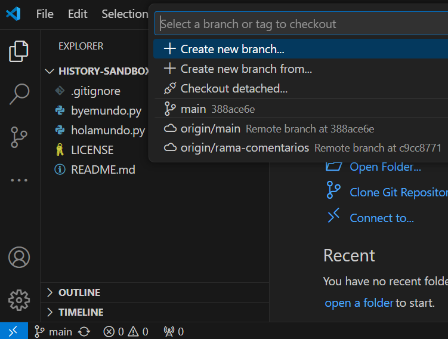
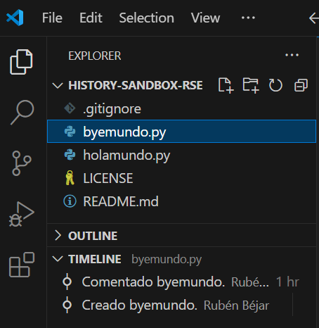
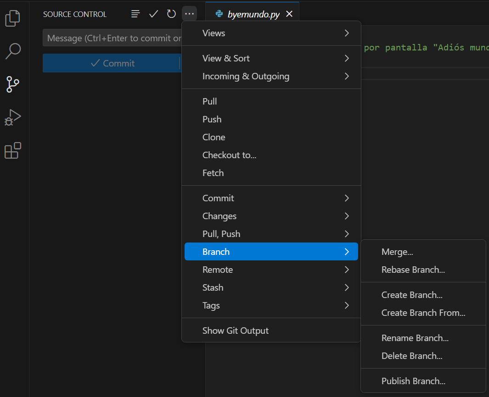
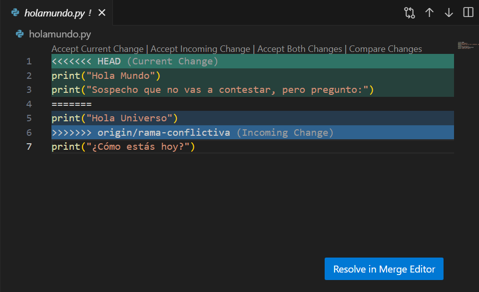
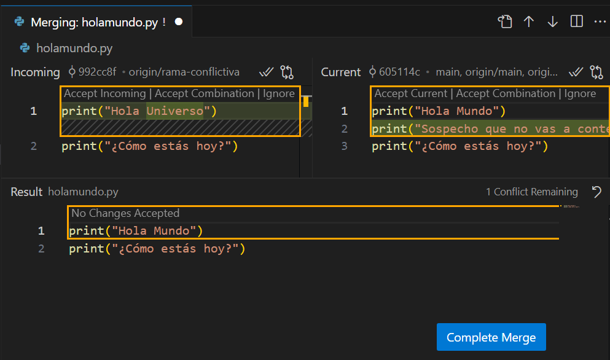
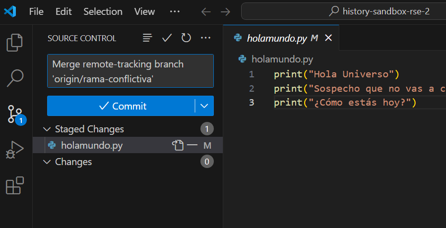

To run the Git commands for the following exercises, you can use Git Bash if you're on Windows, or the Terminal application on MacOS/Ubuntu, Konsole on KDE or the Terminal window in Visual Studio Code. The exercises usually mention Git Bash, but use what you want.
It is a common convention, but maybe not out of place to remind it: in these exercises, we indicate the commands you should write preceded by a $ (the basic command prompt). So, in general, what you need to execute are the commands preceded by $, and the rest of the fixed-width text is the output of those commands, which will vary slightly between different environments.
If your Git isn't configured with your data and GitHub access credentials, the first thing you need to do is:
$ git config --global user.email you@example.com
$ git config --global user.name "Your Name"
$ git config --global init.defaultBranch main
Create a directory called Exercise1 wherever you want. For example, on your Desktop or in your $HOME. Create a text file inside it with the content you want. For example, create one with this "hello world" Python code:
print("hello world")
At this point, we have an unversioned file. If we want to start controlling changes, we need to create a Git repository in that same directory. To do so, navigate to that directory in your Terminal application (right-clicking on the directory will give you the option "Open Git Bash Here", "Open in Terminal" or similar depending on your environment). Once there, create a Git repository:
$ git init
The repository is created, but nothing is yet under version control. We can see the current state with:
$ git status
On branch main
No commits yet
Untracked files:
(use "git add <file>..." to include in what will be committed)
helloworld.py
nothing added to commit but untracked files present (use "git add" to track)
We are on the main branch (it may be master depending on your configuration) because it is the only one created by default when initializing a repository. Git sees that there is a file (helloworld.py), but indicates that it is untracked and tells us what to do to put it under control.
Let's make a commit. Remember that commits in Git have two phases: first, we add changes to the staging area and then we actually make the commit:
$ git add helloworld.py
$ git status
On branch main
No commits yet
Changes to be committed:
(use "git rm --cached <file>..." to unstage)
new file: helloworld.py
After adding to the staging area, the state is that there are pending changes to be confirmed (i.e., pending on whether we decide to make the commit).
$ git commit -m "Created hello world"
[main (root-commit) eb9ef13] Created hello world.
1 file changed, 1 insertion(+)
create mode 100644 helloworld.py
The git commit command has taken the changes from the staging area and created a commit with them. It is the root-commit of the repository (the first one), it's on the main branch, and its unique identifier (SHA-1 hash) starts with eb9ef13. The commit message is mandatory, but we can put whatever we want. If we don't put anything with -m "message", a text editor will open for us to put something.
$ git status
On branch main
nothing to commit, working tree clean
Running git status again allows us to see that now there's nothing to make a commit. In other words, everything in that directory is already under version control and saved in the Git repository.
$ git log --oneline --decorate --graph
* eb9ef13 (HEAD -> main) Created hello world.
Note: In recent versions of Git and some environments, outputs from commands like this git log may pass through the less tool by default. This allows you to access large text outputs in the terminal as if it were a read-only text editor: you can navigate forward and backward through the text, even perform searches. For the purposes of these exercises, all you need to know is that if this happens, you'll notice because the output will stay blocked, without returning to the command prompt, and possibly showing an (END) message. Pressing the q key (quit) will return things to normal.
This git log command shows us the commit history of the repository. Right now, there's only one, so what we see isn't very interesting yet. Let's make some more commits.
First, modify the file helloworld.py. Add another line so it looks like this:
print("hello world")
print("...the world does not answer")
$ git status
On branch main
Changes not staged for commit:
(use "git add <file>..." to update what will be committed)
(use "git restore <file>..." to discard changes in working directory)
modified: helloworld.py
no changes added to commit (use "git add" and/or "git commit -a")
The git status tells us that there's a modified file, but it hasn't been added to the commit. We know how to make a commit (remember it is in two phases: add and then commit).
$ git add .
$ git commit -m "Modified hello world."
[main 6b5457c] Modified hello world.
1 file changed, 2 insertions(+)
In the git add command, we put a .. This is a way of telling Git to add all changes to the stage. If we had modified many things, it would be a good time-saver. In this case, we only used it to save some typing. If you want to know the details of how Git interprets that ., take a look at the pathspec specification.
$ git log --oneline --decorate --graph
* 6b5457c (HEAD -> main) Modified hello world.
* eb9ef13 Created hello world.
Now the git log is a bit more interesting. We see that there are two commits (in reverse chronological order). We can see that the branch main points to the last one we created, and the pointer HEAD points to the branch main.
To do this exercise, give your GitHub account to the professor so they can grant you write access to a shared repository on GitHub.
Once done, clone the repository. Open a terminal in the Desktop or your $HOME directory and run:
$ git clone https://github.com/rbejar/sandbox-rse.git
This command creates a directory called sandbox-rse, and within that directory (which will be the working directory of the repository), it copies the files as they are in the last commit of the main branch of the shared repository.
Now, create a text file with your name inside that directory using any text editor.
To share it with others, first, you need to create a local commit:
$ git add .
$ git commit -m "Created my file."
At this point, your local repository has a commit that is not in the shared repository on GitHub, so no one can see it. To share it, first, you need to synchronize your changes locally with any changes that might have been made to the remote repository (the one on GitHub) while you were making yours.
git pull
This should work without conflicts. Remember that a pull downloads commits from the remote repository and merges them with your current commit, and a merge can cause conflicts. But if each person has created a different file, there shouldn't be any issues for this merge to be automatic.
Once the changes are merged locally, you can share them by pushing them up to the remote:
git push
This push might fail if someone else has pushed their changes to the GitHub repository between your pull and push. In that case, you'll need to go back and do another pull to integrate the remote changes into your local repository, and then again a push to share them.
At this point, if you open https://github.com/rbejar/sandbox-rse in a web browser, you should see your file there.
First, you will clone a repository that has two branches and some commits already created:
$ git clone https://github.com/rbejar/history-sandbox-rse.git
We can see the history of the repository with git log:
git log --oneline --decorate --graph --all
The --all option was not used before. This repository has several branches and we want to see the history of all, so we put it on. On screen you will see something similar to this:
* 388ace6 (HEAD -> main, origin/main, origin/HEAD) byeworld now has social issues
* 9808b79 helloworld is now more social
| * c9cc877 (origin/branch-comments) Commented out byeworld.
| * cc13826 Commented out helloworld.
|/
* 029d3ca Created byeworld.
* 8f7f122 Created helloworld
* 9092073 Initial commit
Although it may seem a bit cryptic, in reality it looks very similar to the diagrams of commits we have seen in theory (only that this is depicted vertically instead of horizontally). For example, we can see that from the commit 029d3ca the repository history diverges: the branch painted on the right, origin/branch-comments, adds two commits from there (the cc13826 and the c9cc877), while the main branch continues on the left and also adds two commits from there (the 9808b79 and the 388ace6).
Let's take advantage of the opportunity to see a little bit of the functionality of Git integrated in Visual Studio Code. To do this, open Visual Studio Code and in the left bar choose the option "Source control":

Choose "Clone repository" and enter the cloning URL: https://github.com/rbejar/history-sandbox-rse.git. You can tell it to clone in the Desktop or in your $HOME. When it asks you, say that you want to open it in the same window where you are and that you trust the authors of the repository.
In VS Code status bar (bottom) you will see that you are on the main branch (that is, that the HEAD pointer of the repository points to the main branch). If you open the file helloworld.py in VS Code itself you will see this:
print("Hello World")
print("How are you?")
If we wanted to switch to the other branch that there is (origin/branch-comments) we could use the command git checkout. But being on VS Code, we can also do a click below where it says main, and choose between the options that offers us which one says "origin/branch-comments":

Doing this not only changes which branch we are on (below in the status bar you will see that we are in branch-comments) but also changes the files in the working directory. Now the file helloworld.py has this:
print("Hello World")
print("How are you?")
Note: What we actually did in VS Code was not a standard checkout. The branch origin/branch-comments is a reference to a remote branch, not a normal branch, and we cannot do much with it locally. To be able to work locally, we need to create a local branch that tracks the remote branch. By default, our main branch tracks origin/main; what we usually want is this relationship between each local and remote branch we want to work with. In modern versions of Git, this can be done directly with a command like git switch branch-comments, which is what VS Code did: it created a local branch called branch-comments and configured it as a remote tracking branch for origin/branch-comments.
To see the history of the repository, the basic functionality of VS Code is limited. We can select a file in the integrated explorer and below display its timeline, where we will see the list of commits where that particular file was modified, and we can click on each commit to view these changes. However, we cannot see a global vision of the repository or multiple branches simultaneously etc.

Note: There are VS Code extensions that allow us to see all this, such as Git History, free, or GitLens, partially free but with some functionality only available under subscription.
Remember that in the repository we have two branches, main and branch-comments. As long as we don't merge them, both branches are parallel: some changes are only on one branch and others are only on the other. Let's assume we want to combine the comments added in the branch-comments branch with the extended code we have in the main branch.
First, let's switch to the main branch:
$ git checkout main
And then merge the changes from the branch-comments branch onto this main branch:
$ git merge branch-comments --m "Merging branch-comments into main"
Auto-merging byeworld.py
Auto-merging helloworld.py
Merge made by the 'ort' strategy.
byeworld.py | 1 +
helloworld.py | 1 +
2 files changed, 2 insertions(+)
The merge was automatic. There were no conflicts between the two branches and the changes could be integrated without issues. If we look at the files byeworld.py and helloworld.py in our working directory, now we will see that they have everything we had put separately on the two branches. And if we look at the repository history:
$ git log --oneline --decorate --graph --all
* 2766fdf (HEAD -> main) Merging branch-comments into main
|\
| * c9cc877 (origin/branch-comments, branch-comments) Commented out byeworld.
| * cc13826 Commented out helloworld.
* | 388ace6 (origin/main, origin/HEAD) byeworld now has social problems
* | 9808b79 helloworld is now more sociable
|/
* 029d3ca Created byeworld.
* 8f7f122 Created helloworld
* 9092073 Initial commit
We see that there's a new commit (here it's the 2766fdf, at the top, but the ID will be different in your case) that integrates both branches (it has two predecessors: the commit 029d3ca and the c9cc877).
First, you will clone a new repository that also has some previous history and whose URL is https://github.com/rbejar/history-sandbox-rse-2.git. Do it with VS Code in the same way as we've seen in the previous section. Open the helloworld.py file to see its content. This repository has two branches: main and rama-conflictiva (i.e., conflictive branch). The changes in the rama-conflictiva branch cannot be merged automatically into the main branch, doing so will provoke a conflict that needs to be resolved.
Select Source Control on the left bar, click on its three dots, and choose Branch > Merge... from the menu:

Among the options that appear, choose origin/rama-conflictiva. We're going to mix the changes in this branch over the main branch.
In the VS Code editor, you'll now see conflicts:

The conflicts are marked with special symbols (e.g., <<<<<<< HEAD) that are standardized and can be resolved in various tools. Note: These markers are normal text, so even if we didn't have a specialized tool to process them, deleting them in any text editor and leaving the file as you'd like it to stay would also resolve the conflict.
The part between ======= and >>>>>>> origin/rama-conflictiva is in the helloworld.py file of the main branch (which our HEAD currently points at), but there's a conflicting change from the other branch. You can click on the blue button marked "Resolve in Merge Editor" to help VS Code resolve it for you.
You'll see this:

The VS Code shows a split editor divided into three parts: Incoming (the branch whose changes we want to merge, in this case origin/rama-conflictiva), Current (the branch we're currently on, which is now main), and Result (which will show the final result after resolution). Although you can do several things, many conflicts are resolved by preferring the changes of one branch or the other. To do that, you can click where it says Accept Incoming or Accept Current for each conflict in that file (in this case, there's only one).
You can also indicate Accept Combination, and let VS Code propose a combination of both. Do that. You'll see how the Result part (on the right) now shows part of the Incoming and part of the Current, and it indicates 0 Conflicts Remaining. Once you've resolved the conflict, click on the blue button Complete Merge and you'll see that now there's a blue button on the left indicating Commit:

Click on that, and the merge will be completed with the corresponding commit.
Note: At this point you'll see a blue button saying something like Sync Changes 2 ^. With that button, you could push those changes to the GitHub repository (you can't because you don't have write access to that repository). What I want to highlight here is that there's no command called Sync in Git. VS Code uses this term both for pulls and pushes. Each code editor has its own interface, and their own way of calling things, which may not be the same as the actual Git commands. Despite Git's massive popularity, there are other version control systems out there. This is another reason to learn how to use Git from the command line: you'll always be able to open a Terminal and execute the commands you know, without having to figure out what that Sync button actually does.
Although we haven't seen it in theory, we can try some basic tools to undo unwanted changes in Git.
First, let's clone a repository with some history:
$ git clone https://github.com/UNIZAR-30245-ARQS/country-data-mvc.git
One of the important things about a version control system is to be able to restore the project to a point in its past. Let's see how it can be done.
Once cloned, if you look at the work directory, you'll see two shell files (mv.sh and mvp-passive_view.sh) created to launch the application easily from Bash and compatible environments. Let's go back to the point before these files were created. Execute the command:
$ git log --oneline
The output on screen gives you a summary of the repository commits (with the most recent ones at the top). Look for one with a commit message "Added bash scripts to quickly launch the applications". Note the hash of the commit that is just before this one. Execute the command:
$ git checkout EL-HASH-ANOTADO
If you look at the output, it tells you that you're in detached HEAD state, i.e., the HEAD pointer, which marks the current commit where we are at each moment, does not point to a branch but directly to a commit, which is not usual. This is not necessarily bad, but we don't want to be in this state more than occasionally, and we certainly don't want to save changes while we're in it.
If you look at the work directory of the repository now, you'll see that the shell files are no longer there. What's in that directory is what was there just before the commit where I added those two files. You could examine the project, compile it, and even make some changes. But remember that you don't want to save those changes (or add them or commit them) while you're in detached HEAD state.
You can go back to the initial state by executing:
$ git checkout master
This makes the HEAD pointer point to the master branch (which is the only one there in the repository). And since this branch still points to the last commit of the repository, you'll be back to having all the latest changes that were in the repository.
If everyone did everything correctly all the time, there would be no need to undo unwanted changes because they wouldn't have happened. But it's normal to have to undo something from time to time. Let's see the two main options.
We'll start with the repository again in its initial state (if you had any problems with the previous task, delete the directory and clone the repository again).
Delete the file README.md. Do an add+commit (and put something like “README.md deleted” in the commit message). If you do a git log --oneline, the top commit will be the one called “README.md deleted”.
Oops, you've just deleted the file that wasn't supposed to be deleted!
You might think that going back to the past strategy from the previous task could be useful. The problem is that if you check out the previous commit, you'll be in "detached HEAD" mode and you'd have to find a way to get the main branch pointing to that commit so things can go on as if nothing had happened. This can be done, but it's not the usual or best solution for this problem.
A better alternative is to do a git revert. If you execute
$ git revert HEAD
Git will create a new commit that essentially reverts the changes made in the last
commit that was made and adds it to the history of the repository. Do it, then run
git log --oneline. You'll see that the top commit has a message by default that is “Revert README.md deleted”, the previous one follows (the one called “README.md deleted”) and if you look at the directory you'll see that the file has come back to its place.
The revert is necessary when working with shared repositories and the commit that wants to be undone has already been shared with others. This is because this reversal is treated as a new commit that can be shared and integrated with other changes just like any other.
But if the change hasn't gone out of your repository yet, and you haven't integrated changes from other repositories into yours (e.g., you haven't done any git pull), there's another option to keep it under wraps: using the git reset command.
Delete the file README.md. Do an add+commit (and put something like “README.md deleted again” in the commit message). If you do a git log --oneline, the top commit will be the one called “README.md deleted again”.
Oops, you've just deleted the file that wasn't supposed to be deleted... again!
Do a git log --oneline and note down the hash of the commit you want to go back to. In reality, it's the one before all this pointless destruction of README files you've been causing, and it's marked in history as “Update README.md”. Run
$ git reset --hard EL-HASH-ANOTADO
The output from the command will tell you that HEAD now points to this commit, but it won't tell you that you're detached because you're not. If you do a git log --oneline, you'll see that the top commit is the one you wanted (“Update README.md”) and the others have simply disappeared from history. And if you look at the directory, you'll see that the file README.md has come back.
The reset command is dangerous, it can make changes that cannot be undone, and it's complicated because it does different things depending on the parameters you use with it. The revert command is less "discreet" but also safer. In general, the reset command should only be used to undo changes made in private branches (those you create with the intention of never sharing them outside your local repository).
Let's assume you have this tree of commits (if you want to try the commands in this section, create a repository with something and make changes and commits until you have 4):
c1 <- c2 <- c3 <- c4 (HEAD -> main)
and you want to discard c2, c3 and c4. To do that, you would do git reset c1. That command would leave this tree of commits:c1 (HEAD -> main) and c2, c3 and c4 would be orphaned (they will be removed by Git at some point). This is fine if you hadn't made the changes public and it's what you wanted. By default, reset is --mixed: moves the pointers, leaves the stage as in c1 and any change we had in the stage in c4 passes to the working directory. If you put --hard, moves the pointers and leaves the stage and the working directory as in c1. The changes that were in the stage or the working directory would be lost. And if you put --soft, only moves the pointers; and I haven't found a sensible use case for this option, but there must be one.
The git revert is easy if you only want to undo the changes of a specific commit. For example, with the original tree of commits c1 <- c2 <- c3 <- c4 (HEAD -> main), if you want to discard the changes made in c2 (but not in c3 or c4) you would do git revert c2 and the tree would stay like this: c1 <- c2 <- c3 <- c4 <- c2-undo (HEAD -> main). But if you really want to discard several commits with revert it's also possible:
First, prepare a new commit undoing the last 3 commits:
$ git revert -n HEAD~3..HEAD
And then we make the commit.
$ git commit -m "Sorry, I'm undoing the last 3 commits because of a failure"
And we can share this commit if it's needed so that others can also undo those changes:
git push
The -n parameter we've put on revert tells it to make the undoes without automatically making the commit. In exchange, it allows us to undo several commits at once without having to create a revert commit for each one.
The HEAD~3 that we've put is a way of referencing commits in a relative manner. We can reference commits absolutely with their hashes. But we can also reference them relatively to others. For example, HEAD~3 is the "great-grandfather" (the father of the father of the father) of HEAD. There are other ways to reference commits relatively and when the trees of commits get complicated this becomes complicated too (for example think about what is HEAD~3 if HEAD is a merge commit (and therefore has more than one father)?). There are rules for that (take a look at $ man gitrevisions), but it is unlikely that you will have to know all that.
We haven't seen this in theory, but if you want to try creating a branch and sharing it with another person, the essential idea is:
git checkout -b test), make some commits on it and push it to a shared repository (one on GitHub for example) with git push origin test. By doing this, in addition to pushing the branch to the shared repository, a remote tracking branch will be created locally, which in this case would be called origin/test.git fetch origin test. We make a fetch because if we did a git pull origin test, it would download the branch test, but immediately try to merge it with the branch where HEAD was at that moment (typically main or master); and this last one is usually not what you want to do automatically when downloading branches.fetch command has created a branch called origin/test, but this one doesn't work for local work. This can be done with the command git branch test origin/test. If they didn't want to make commits (for example, only wanted to download the test branch and merge it with an existing local branch), they wouldn't need to create a local branch; they could do the merge directly with the origin/test branch.git push origin -d potato. If we find ourselves with local branches that track some remote branch (something like origin/test) but the remote branch called test has already been deleted (and therefore that local tracking branch doesn't serve us anymore), we can do a cleanup with the command git fetch origin -p which will make a normal fetch (bring everything that is in the remote repository that we don't have locally without trying to merge it with anything) and then delete the local branches that track a remote one that has been deleted.